什么是脉冲神经网络
随着深度学习的发展，人工神经网络（ANN）已经在多个领域取得了显著成果。ANN 模型通过连续的实值信号进行信息传递和计算，结构上模仿了生物神经系统，但与真实神经元的离散脉冲发放机制仍存在较大差异。脉冲神经网络 （Spiking Neural Networks, SNN）更真实地模拟了生物神经元的动态行为，被认为是第三代神经网络。
ANN 中使用的神经元模型向下一层传播的仅仅是单位时间内发放了多少脉冲 ，但是在脑神经元中，脉冲发生的时间点 以及不同神经元间脉冲发放的时间差 都被证明是有意义的。脉冲的时序 （spike timing）以及膜电位在阈值以下的变化 （sub-threshold membrane potential）。
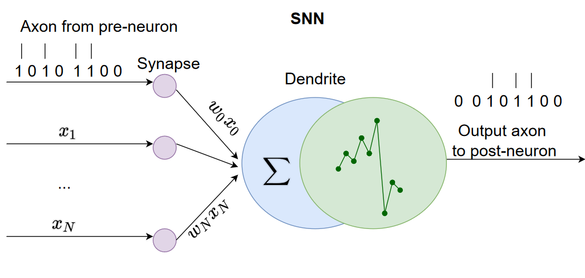每个神经元 都在对输入进行矩阵乘法操作，而SNN中的每个神经元都在模拟生物神经细胞的生理活动：在静息电位时若收到一个刺激，则膜电位上升，若上升程度超过阈值，则发出一个Spike。脉冲神经网络的优点：
Spikes（脉冲） ：生物神经元通过电脉冲传递信息，典型的电压脉冲幅值约为 100mV，神经元的计算模型中通常将这种连续信号简化为二值事件 （0 或 1），即某个时间是否有脉冲，这种简化不仅生物上合理，而且在硬件实现 中远比高精度实数要简单得多。Sparsity（稀疏性） ： 神经元在大多数时间里是静止的（不发放脉冲），即大多数激活值为 0。稀疏张量在内存中存储成本低，运算时也更快，因为许多乘法操作会被 0 抑制。对于神经形态硬件而言，这意味着节省能耗和提高效率 ，因为不需要访问所有权重，只需要处理活跃神经元。Static-Suppression（静态抑制） / 事件驱动处理 ：感官系统只处理新变化 ，不响应静止不变的信号。传统图像处理需要对每个像素/通道采样，导致处理变慢，而事件驱动处理只关注变化，可极大提升效率和速度。
和ANN一样，SNN是由很多神经元组织起来的，但是SNN的神经元模拟了生物神经元的特性。我们先来看神经元的基本结构：神经元基本结构：
信号传导过程 ：静息膜电位 ，典型值为约 −70.15 mV 。电压门控通道 ：
钠通道开放，Na⁺大量进入细胞，膜电位上升；
接着钾通道开放 ，K⁺外流使膜电位下降，并可能低于静息电位（过冲）；
最后膜电位回归稳定。v peak = 38.43 mV v_{\text{peak}} = 38.43 \text{ mV} v peak = 38.43 mV
目前已经有很多模拟信号传导过程的神经元模型 被提出，他们的复杂程度和计算效率各不相同，如下图所示：HH模型 是生物真实度最高的模型，但是由于计算成本过大，在大规模模拟中并不可行。目前使用最广泛的模型是LIF模型。
1. LIF模型（Leaky integrate and Fire Model ）
目前LIF模型 是最广泛使用的神经元模型，其处于生物合理性和实用性之间的最佳位置。RC电路 。
当膜电位的积分值超过某个设定阈值时，神经元会触发一个脉冲（spike），随后立即将膜电位重置。LIF 模型并不关心脉冲本身的形状和波形，而是将每个脉冲视为一个离散事件。也就是说，LIF 模型中的信息通过脉冲的时间或频率来编码。
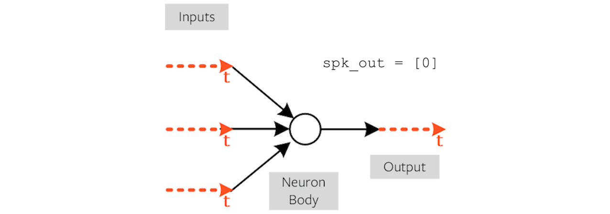
LIF动力学模型
我们将神经元视为一个RC电路，电路中包含一个电阻（表示膜的泄漏）和一个电容（表示膜两侧的电荷积累） 总电流： I in ( t ) I_{\text{in}}(t) I in ( t )
I in ( t ) = I R ( t ) + I C ( t ) I_{\text{in}}(t) = I_R(t) + I_C(t)
I in ( t ) = I R ( t ) + I C ( t )
I R ( t ) I_R(t) I R ( t ) I C ( t ) I_C(t) I C ( t )
泄露电流： I R ( t ) I_R(t) I R ( t ) U mem ( t ) U_{\text{mem}}(t) U mem ( t )
I R ( t ) = U mem ( t ) R I_R(t) = \frac{U_{\text{mem}}(t)}{R}
I R ( t ) = R U mem ( t )
R R R U mem ( t ) U_{\text{mem}}(t) U mem ( t )
膜储存的电荷量： Q Q Q
Q = C ⋅ U mem ( t ) Q = C \cdot U_{\text{mem}}(t)
Q = C ⋅ U mem ( t )
C C C Q Q Q
膜电流
I C ( t ) = d Q d t = C ⋅ d U mem ( t ) d t I_C(t) = \frac{dQ}{dt} = C \cdot \frac{dU_{\text{mem}}(t)}{dt}
I C ( t ) = d t d Q = C ⋅ d t d U mem ( t )
因此膜电位可以写成如下的微分方程形式：
I in ( t ) = U mem ( t ) R + C d U mem ( t ) d t R C d U mem ( t ) d t = − U mem ( t ) + R I in ( t ) \begin{align}
&I_{\text{in}}(t) = \frac{U_{\text{mem}}(t)}{R} + C \frac{dU_{\text{mem}}(t)}{dt} \\
&RC \frac{dU_{\text{mem}}(t)}{dt} = -U_{\text{mem}}(t) + R I_{\text{in}}(t)
\end{align}
I in ( t ) = R U mem ( t ) + C d t d U mem ( t ) RC d t d U mem ( t ) = − U mem ( t ) + R I in ( t )
等式右边的单位是Voltage，左边d U mem ( t ) d t \frac{dU_{\text{mem}}(t)}{dt} d t d U mem ( t ) R C = τ RC=\tau RC = τ 时间常数。
我们想要得到U mem ( t ) U_{\text{mem}}(t) U mem ( t ) 乘积因子 法，等式两边乘e x p ( t τ ) exp(\frac{t}{\tau}) e x p ( τ t ) C 1 C_1 C 1 U mem ( 0 ) = U 0 U_{\text{mem}}(0)=U_0 U mem ( 0 ) = U 0 I in ( t ) = 0 I_{\text{in}}(t)=0 I in ( t ) = 0 1 / τ 1/\tau 1/ τ
刚才我们得到了LIF方程的解析解，但应用在神经网络中，我们需要一个离散、递归形式的LIF神经元模型。我们使用**前向欧拉法（forward Euler method）**将其离散化。
τ d U ( t ) d t = − U ( t ) + R I in ( t ) \tau \frac{dU(t)}{dt} = -U(t) + R I_{\text{in}}(t)
τ d t d U ( t ) = − U ( t ) + R I in ( t )
首先，我们尝试在不取极限 Δ t → 0 \Delta t \to 0 Δ t → 0
τ U ( t + Δ t ) − U ( t ) Δ t = − U ( t ) + R I in ( t ) \tau \frac{U(t + \Delta t) - U(t)}{\Delta t} = -U(t) + R I_{\text{in}}(t)
τ Δ t U ( t + Δ t ) − U ( t ) = − U ( t ) + R I in ( t )
当 Δ t \Delta t Δ t
U ( t + Δ t ) = U ( t ) + Δ t τ ( − U ( t ) + R I in ( t ) ) U(t + \Delta t) = U(t) + \frac{\Delta t}{\tau} \left( -U(t) + R I_{\text{in}}(t) \right)
U ( t + Δ t ) = U ( t ) + τ Δ t ( − U ( t ) + R I in ( t ) )
其中Δ t \Delta t Δ t
膜电位变化情况代码模拟
代码模拟通过snntorch python 库完成。安装教程参见：https://snntorch.readthedocs.io/en/latest/installation.html snnTorch 是一个基于 PyTorch 构建的 轻量级脉冲神经网络（Spiking Neural Network, SNN）建模与训练库 ，所有模块都继承自 torch.nn.Module，可与 PyTorch 无缝集成。
无外部输入的情况
用python代码模拟以下神经元活动：
时间步长为1 E − 3 s 1E-3s 1 E − 3 s R = 5 , C = 1 E − 3 R=5,C=1E-3 R = 5 , C = 1 E − 3 U 0 = 0.9 V U_0=0.9V U 0 = 0.9 V
1 2 3 4 5 6 7 8 9 import snntorch as snnfrom snntorch import spikeplot as spltfrom snntorch import spikegenimport torchimport torch.nn as nnimport numpy as npimport matplotlib.pyplot as plt
1 2 3 4 5 6 7 8 9 10 11 12 13 14 15 16 17 time_step = 1e-3 5 1e-3 1 ) * 0.9 1 ) 1 ) for step in range (num_steps):"Lapicque's Neuron Model Without Stimulus" )
结果显示，在没有外部输入的情况下，膜电位随着时间以1 / τ 1/\tau 1/ τ
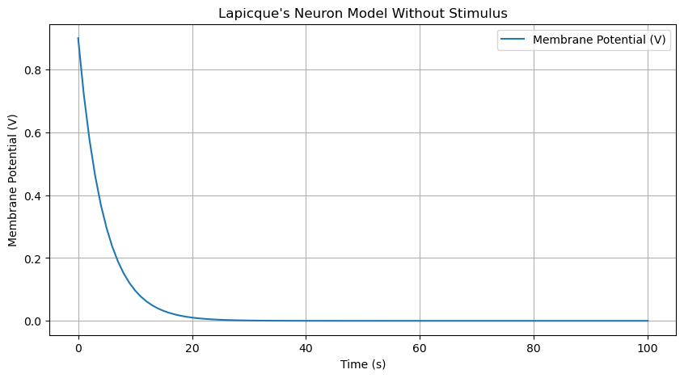
连续输入下的膜电位变化
假设初始电位为0，现在考虑在t=10ms后在每个时间步都输入一个100毫安的电流（I in = 100 m A I_{\text{in}}=100mA I in = 100 m A
1 2 3 4 5 6 7 8 9 10 11 12 13 14 10 , 1 ), torch.ones(190 , 1 )*0.1 ), 0 ) 1 ) 1 ) 200 for step in range (num_steps):10 )
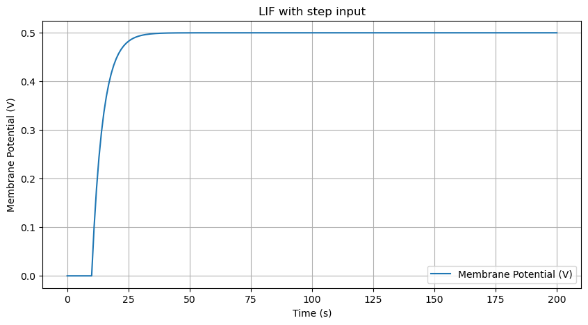
U mem ( t ) = I in ( t ) R [ 1 − e − t / τ ] U_{\text{mem}}(t) = I_{\text{in}}(t)R \left[ 1 - e^{-t/\tau} \right]
U mem ( t ) = I in ( t ) R [ 1 − e − t / τ ]
在t → ∞ t\to \infty t → ∞ U → I in R U\to I_{\text{in}}R U → I in R I in R = 0.1 ∗ 5 = 0.5 I_{\text{in}}R=0.1*5=0.5 I in R = 0.1 ∗ 5 = 0.5
脉冲输入下的膜电位变化
下面考虑在30ms时截断电流输入，也就是输入在10ms时刻开启，在30ms结束。只需要对上面代码的cur_in进行修改即可。
1 2 3 4 5 6 7 8 9 10 11 12 13 14 15 10 , 1 ),torch.ones(20 , 1 )*0.1 , torch.zeros(170 , 1 )), 0 ) 1 ) 1 ) 200 for step in range (num_steps):"Lapicque's Neuron Model With Input Pulse" , vline1=10 , vline2=30 )
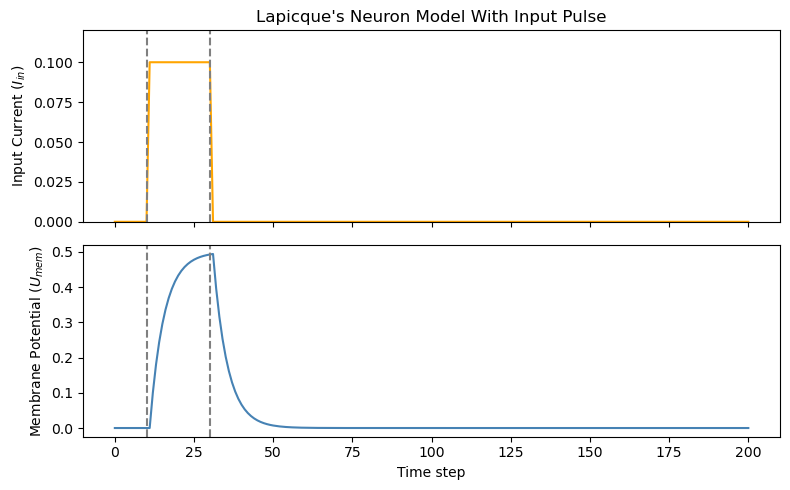τ \tau τ
1 2 3 4 5 6 7 8 9 10 11 12 cur_in2 = torch.cat((torch.zeros(10 , 1 ), torch.ones(10 , 1 )*0.111 , torch.zeros(180 , 1 )), 0 ) 1 )1 )for step in range (num_steps-1 ):"Lapicque's Neuron Model With Input Pulse: x1/2 pulse width" , vline1=10 , vline2=20 )
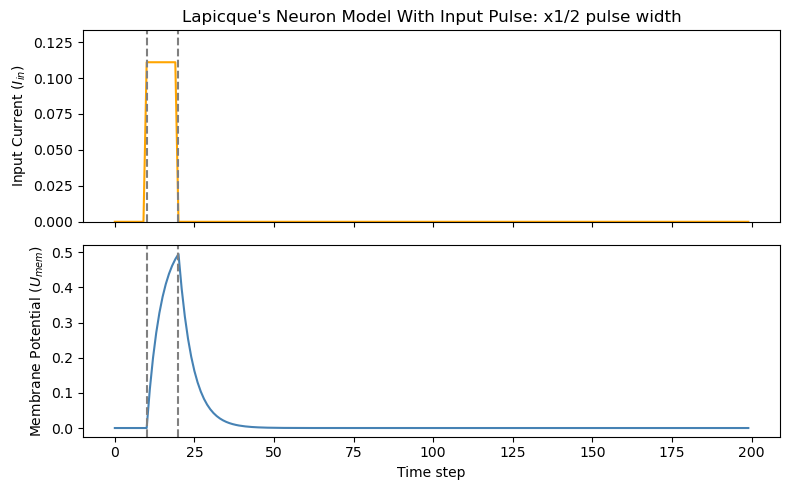
1 2 3 4 5 6 7 8 9 10 11 12 cur_in3 = torch.cat((torch.zeros(10 , 1 ), torch.ones(5 , 1 )*0.147 , torch.zeros(185 , 1 )), 0 ) 1 )1 )for step in range (num_steps-1 ):"Lapicque's Neuron Model With Input Pulse: x1/4 pulse width" , vline1=10 , vline2=15 )
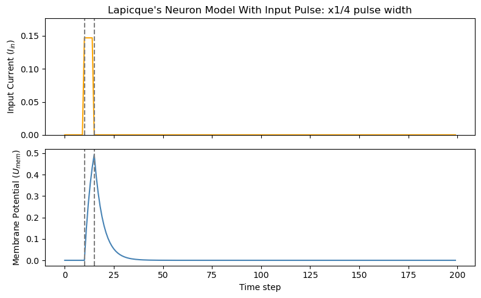I ( t ) = Q / t 0 , t 0 → 0 I(t)=Q/t_0, t_0\to 0 I ( t ) = Q / t 0 , t 0 → 0 I in ( t ) = Q δ ( t − t 0 ) I_{\text{in}}(t) = Q \delta(t - t_0) I in ( t ) = Q δ ( t − t 0 ) I in I_{\text{in}} I in
1 = ∫ t 0 − a t 0 + a δ ( t − t 0 ) d t 1 = \int_{t_0 - a}^{t_0 + a} \delta(t - t_0)\,dt
1 = ∫ t 0 − a t 0 + a δ ( t − t 0 ) d t
f ( t 0 ) = ∫ t 0 − a t 0 + a f ( t ) δ ( t − t 0 ) d t f(t_0) = \int_{t_0 - a}^{t_0 + a} f(t)\delta(t - t_0)\,dt
f ( t 0 ) = ∫ t 0 − a t 0 + a f ( t ) δ ( t − t 0 ) d t
在这里，若 f ( t ) = I in ( t = 10 ) = 0.5 A f(t) = I_{\text{in}}(t=10) = 0.5\,A f ( t ) = I in ( t = 10 ) = 0.5 A f ( t ) = Q = 0.5 C f(t) = Q = 0.5\,C f ( t ) = Q = 0.5 C
1 2 3 4 5 6 7 8 9 10 11 12 13 10 , 1 ), torch.ones(1 , 1 )*0.5 , torch.zeros(189 , 1 )), 0 ) 1 )1 )for step in range (num_steps-1 ):"Lapicque's Neuron Model With Input Spike" ,vline1=10 )
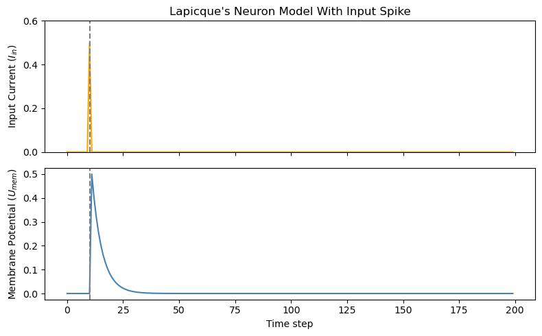
输出脉冲
到目前为止，我们只观察了神经元对输入的反应，但是神经元并没产生输出、产生并发出自己的脉冲 ，就必须在被动膜模型的基础上引入一个阈值机制 ，当膜电位超过这个阈值时，就会在被动膜模型之外触发一个脉冲 的生成，神经元在发出一个脉冲后，会被重置 到一个特定的电位值，模拟生物神经元在达到“动作电位”后的不应期。
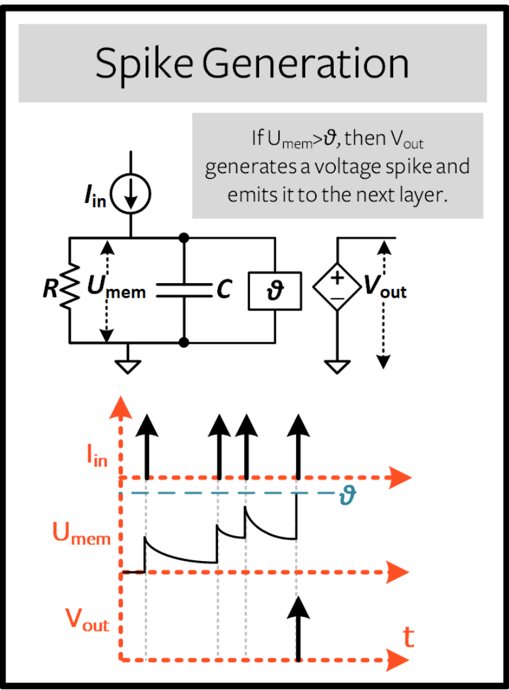
连续电流输入
我们先自己编写一个包含阈值与重置机制的LIF函数：
1 2 3 4 5 6 def leaky_integrate_and_fire (mem, cur=0 , threshold=1 , time_step=1e-3 , R=5.1 , C=5e-3 ):return mem, spk
1 2 3 4 5 6 7 8 9 10 11 12 13 14 15 16 17 18 10 ), torch.ones(190 )*0.2 ), 0 )1 )for step in range (num_steps):1 , vline=109 , ylim_max2=1.3 ,"LIF Neuron Model With Reset" )
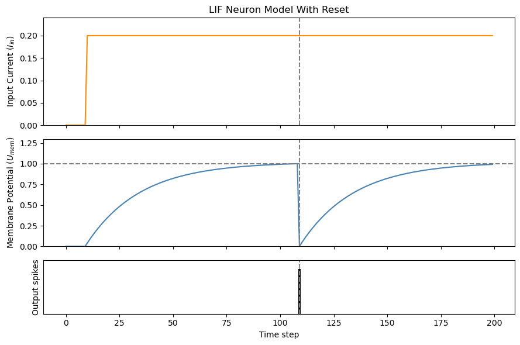那么膜电位会更快到达峰值 ，那么这将对输入有什么影响呢？
1 2 3 4 5 6 7 8 9 10 11 12 13 14 15 16 17 18 19 10 , 1 ), torch.ones(190 , 1 )*0.3 ), 0 ) 1 )1 )for step in range (num_steps-1 ):1 , ylim_max2=1.3 ,"Lapicque Neuron Model With Periodic Firing" )
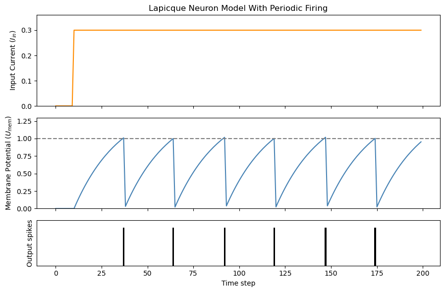
1 2 3 4 5 6 7 8 9 10 11 12 13 14 15 16 17 18 19 20 21 22 5.1 , C=5e-3 , time_step=1e-3 , threshold=0.5 )10 , 1 ), torch.ones(190 , 1 )*0.3 ), 0 )1 )1 )for step in range (num_steps-1 ):0.5 , ylim_max2=1.3 ,"Lapicque Neuron Model With Lower Threshold" )
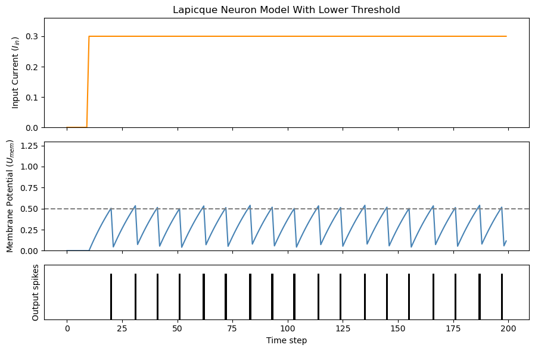
脉冲电流输入
在上面的模拟中，我们对神经元施加了连续、恒定的刺激，但无论是在深度神经网络 中，还是在生物大脑 中，大多数神经元实际上是连接到其他神经元上的。因此，它们更可能是接收到来自其他神经元的脉冲（spikes） ，而不是简单地接收一个恒定电流的输入。
我们使用snntorch库中的snntorch.spikegen.rate_conv来生成一些随机的输入脉冲，并将其输入到刚才定义的神经元模型中：
1 2 3 4 5 6 7 8 9 10 11 12 13 1 )) * 0.40 )print (f"There are {int (sum (spk_in))} total spikes out of {len (spk_in)} time steps." )"w" , figsize=(8 , 1 ))111 )1 ), ax, s=100 , c="black" , marker="|" )"Input Spikes" )"Time step" )
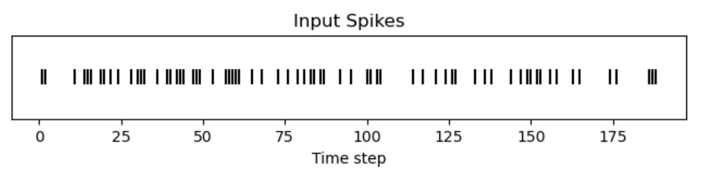
1 2 3 4 5 6 7 8 9 10 11 12 13 14 15 16 17 1 )*0.5 1 )for step in range (num_steps-1 ):"Lapicque's Neuron Model With Input Spikes" )
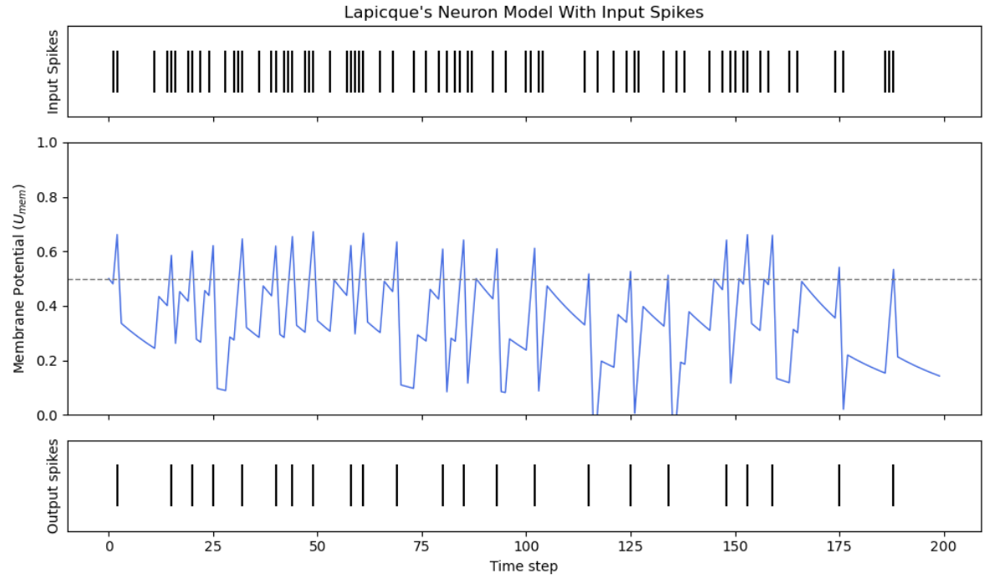
重置机制
在上一节，我们已经从零开始实现了一个重置机制，但让我们更深入地探讨一下。膜电位的这种急剧下降会抑制脉冲的再次生成，这也部分解释了大脑为何如此节能。
从生物学角度看，这种膜电位的下降被称为“超极化（hyperpolarization） ”。在超极化之后，神经元在短时间内会更难再次发放脉冲。我们使用重置机制 来模拟这种超极化现象。
通过减法重置（reset by subtraction） （默认方式）—— 每当产生一次脉冲时，就从当前膜电位中减去阈值；重置为零（reset to zero） —— 每次产生脉冲时强制将膜电位设置为 0；不重置（no reset） —— 什么都不做，允许发放行为可能变得不可控。snn.Lapicque方法设置一个包含阈值和不同重置机制的模型。默认使用subtract，可以通过设置reset_mechanism="zero" 来进行切换。
1 2 3 4 5 6 7 8 9 10 11 12 13 14 15 16 17 18 19 20 21 5.1 , C=5e-3 , time_step=1e-3 , threshold=0.5 , reset_mechanism="zero" )1 )) * 0.40 )1 )*0.5 1 )for step in range (num_steps):"Reset to zero" )
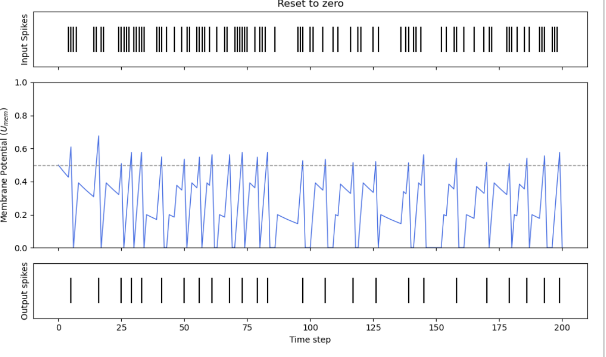
2. 脉冲编码
上一节我们介绍了LIF神经元模型，以及这个模型对外部刺激的反应。LIF神经元模型接收的是脉冲刺激，但是我们平时接收到的信息应该如何被转化为脉冲信号输入神经元呢？我们以MNIST图片数据集为例。
在每个时间步，将相同的训练样本 X ∈ R m × n \mathbf{X} \in \mathbb{R}^{m \times n} X ∈ R m × n 静态、不变的视频 。X \mathbf{X} X X i j X_{ij} X ij [ 0 , 1 ] [0,1] [ 0 , 1 ]
将输入数据转换为一个长度为 num_steps 的脉冲序列（spike train） ，其中每个像素/特征仅取离散值 X i j ∈ { 0 , 1 } X_{ij} \in \{0, 1\} X ij ∈ { 0 , 1 } 时变脉冲序列 ，但这个脉冲序列仍然反映原始图像的结构。这听起来可能有点抽象，下面我们会结合三种编码机制来详细介绍这种想法。snntorch中，模块snntorch.spikegen专门用于将数据转化为脉冲输入，一共有三种编码方式可供选择：
速率编码 （Rate coding）：根据输入特征值的大小决定脉冲的频率。特征值越大，脉冲越频繁。spikegen.rate潜伏期编码 （Latency coding）：根据输入特征值决定首次脉冲的时间。特征值越大，脉冲出现得越早。spikegen.latency增量调制 （Delta modulation）：根据输入特征在时间上的变化量生成脉冲。只有当输入发生变化时才发放脉冲。spikegen.delta
速率编码 （Rate coding）速率编码 通过将每个像素的数值视为一个在每个时间步中发放脉冲的概率 ，从而实现这种转换。X i j X_{ij} X ij [ 0 , 1 ] [0, 1] [ 0 , 1 ] 我们将该值视为一次伯努利试验的成功概率 （即发放脉冲的概率），表示在每个时间步上是否发放一个脉冲信号（1 表示发放，0 表示不发放）。这种方式的数学表达是：
P ( R i j = 1 ) = X i j , P ( R i j = 0 ) = 1 − X i j P(R_{ij} = 1) = X_{ij}, \quad P(R_{ij} = 0) = 1 - X_{ij}
P ( R ij = 1 ) = X ij , P ( R ij = 0 ) = 1 − X ij
其中 R i j ∼ B ( 1 , X i j ) R_{ij} \sim B(1, X_{ij}) R ij ∼ B ( 1 , X ij )
为了演示这个过程，我们可以构造一个简单的例子：创建一个长度为 10 的向量，每个元素都为 0.5，表示每个时间步有 50% 的概率发放脉冲。然后，我们用 torch.bernoulli() 函数对这个向量进行采样，生成脉冲编码向量。如下所示：
1 2 3 4 5 6 7 8 100 0.5
输出结果可能是：
1 2 3 rate_coded_vector = torch.bernoulli(raw_vector)print (f"The output is spiking {rate_coded_vector.sum ()*100 /len (rate_coded_vector):.2 f} % of the time." )is spiking 48.00 % of the time.
这个输出意味着，在 100个时间步中，有 48次发生了脉冲事件（值为 1），符合设定的概率期望（0.5）但具有一定随机性。
总之，速率编码提供了一种将静态图像数据转换为 SNN 可处理的时序脉冲流的方式，其优点是实现简单、直观，并且与生物神经系统中脉冲频率传递强度的机制相吻合。 num_steps→ ∞ \to \infty → ∞
我们可以用spikegen.rate 生成一个经过rate编码的数据样本:
1 2 3 4 5 6 7 8 9 from snntorch import spikegeniter (train_loader)next (data)100 )print (spike_data.size())>>> torch.Size([100 , 128 , 1 , 28 , 28 ])
如果输入值超出了0-1区间，那么它就不再代表一个概率。 在这种情况下，系统会自动将数值裁剪到合法范围内，以确保每个特征值都能被正确地解释为一个概率。[num_steps × batch_size × input dimensions]
关于Rate coding 的讨论
速率编码（Rate Coding）的理念其实是颇具争议的。尽管我们相当有信心速率编码确实出现在我们的感官外围系统 ，但我们并不确定大脑皮层整体是否也以脉冲发放频率的方式编码信息 。
能耗问题（Power Consumption）：初级视觉皮层（V1）中约15%的神经元活动 。唯一的 编码机制，因为大脑受限于资源，同时又高度高效。
反应响应时间（Reaction Response Times）：我们只能处理极少量的脉冲信息。
虽然大脑皮层并不完全以速率编码的方式处理数据，但我们的生物传感器**（如视网膜）仍很可能使用了这种编码方式。 尽管它存在功耗和时延上的劣势，但它具备一个极大的优点：鲁棒性高，抗噪声能力强 。 即使有些脉冲未能成功发出，也没关系，因为还有很多冗余脉冲在其他时间步上发放。
潜伏期编码 Latency Coding
时间编码（Temporal codes）捕捉了神经元精确发放时间的信息； 与依赖发放频率的速率编码相比，Latency Coding的单个脉冲在时间编码中所携带的信息量更大 。 尽管时间编码对噪声更为敏感 ，但它可以大幅降低运行 SNN 算法所需硬件的能耗 。spikegen.latency 允许每个输入在整个时间范围内最多发放一次脉冲 ，特征值越接近 1 ，发脉冲的时间越早 ；特征值越接近 0 ，发脉冲的时间越晚 ，例如在 MNIST 图像中：亮色像素（值大）会更早发放脉冲 ，暗色像素（值小）会更晚发放。
我们回忆上一节提到的神经元动力学模型，如果初始电压为0，那么膜电位和输入电流I I I t t t
V ( t ) = I i n R [ 1 − e − t / R C ] V(t) = I_{in}R \left[1 - e^{-t/RC} \right]
V ( t ) = I in R [ 1 − e − t / RC ]
如果此时我们设定阈值为V thr V_{\text{thr}} V thr
V ( t ) = I i n R [ 1 − e − t / R C ] = V t h r V(t) = I_{in}R \left[1 - e^{-t/RC} \right] = V_{thr}
V ( t ) = I in R [ 1 − e − t / RC ] = V t h r
t = R C ⋅ ln ( I i n R I i n R − V t h r ) t = RC \cdot \ln\left( \frac{I_{in}R}{I_{in}R - V_{thr}} \right)
t = RC ⋅ ln ( I in R − V t h r I in R )
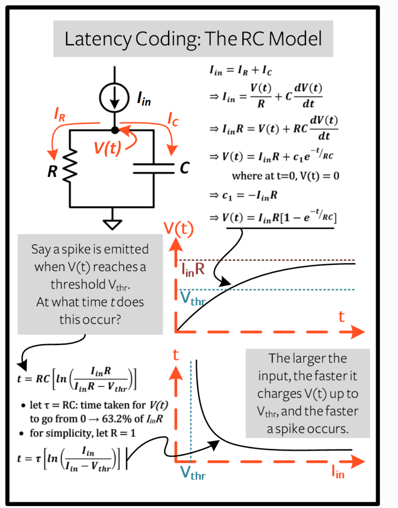输入越大 ，电压上升越快 → 越早发出脉冲 。spike_times 表示每个神经元触发脉冲的时间点 ， 而不是像传统稀疏张量那样仅包含是否发放脉冲的 1/0 表示。spikegen.latency 函数自动完成，我们只需将 MNIST 数据集中的一个小批量 data_it 传入即可：
1 spike_data = spikegen.latency(data_it, num_steps=100 , tau=5 , threshold=0.01 )
其产生的数据如下图所示，信号最强烈的白色像素最早发出脉冲，黑色不发出信号的黑色像素则在结束时发送脉冲
增量调整（Delta Modulation）
有理论认为，视网膜具有适应性：它只在有新信息需要处理时才会作出反应 。生物系统是事件驱动（event-driven）的 ，神经元依赖“变化”而生。
增量调制（Delta modulation） 是基于事件驱动的脉冲机制 ，snnTorch.delta 函数接受一个时间序列张量作为输入，它会计算每个特征在相邻时间步之间的差值。
默认情况下，如果这个差值既是正的、又大于设定的阈值 VthrV_{thr} ，就会触发一个脉冲。
我们用一组数据来展示这个过程：
1 2 3 4 5 6 7 8 9 10 0 , 1 , 0 , 2 , 8 , -20 , 20 , -5 , 0 , 1 , 0 ])"Some fake time-series data" )"Time step" )"Voltage (mV)" )
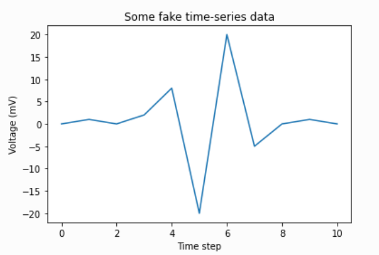spikegen.delta针对它输出一组脉冲，阈值设置为4.
1 2 3 4 5 6 7 8 9 10 11 12 13 14 15 4 )"w" , figsize=(8 , 1 ))111 )"black" )"Input Neuron" )"Time step" )0 , len (data))
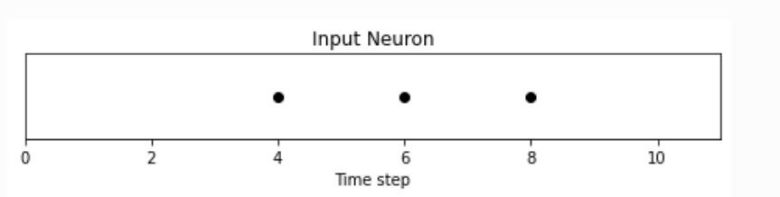
对照上一张图看，spikegen.delta在数值8,20,0处发放了脉冲，但是没有在向下落差很大的-20处发送脉冲，因为此时spikegen.delta只对on-spike（正向脉冲）有反应。off_spike=True。
1 2 3 4 5 6 7 8 9 10 11 12 13 14 15 16 4 , off_spike=True )"w" , figsize=(8 , 1 ))111 )"black" )"Input Neuron" )"Time step" )0 , len (data))
尽管 spikegen.delta 在此仅通过一个虚拟样本数据 进行了演示， 它真正的用途是用于压缩时间序列数据 ： 只有在出现足够大的变化或事件时才生成脉冲。
3. 构建前向传播的SNN
模型简化
前面的教程中，我们学习了 LIF 神经元模型的动力学模型，但它相对复杂，涉及许多超参数：电阻 R R R C C C Δ t \Delta t Δ t U thr U_{\text{thr}} U thr
U ( t + Δ t ) = ( 1 − Δ t τ ) U ( t ) + Δ t τ I in ( t ) R (1) U(t + \Delta t) = \left(1 - \frac{\Delta t}{\tau} \right) U(t) + \frac{\Delta t}{\tau} I_{\text{in}}(t) R \tag{1}
U ( t + Δ t ) = ( 1 − τ Δ t ) U ( t ) + τ Δ t I in ( t ) R ( 1 )
若无输入电流，即 I in ( t ) = 0 I_{\text{in}}(t) = 0 I in ( t ) = 0
U ( t + Δ t ) = ( 1 − Δ t τ ) U ( t ) (2) U(t + \Delta t) = \left(1 - \frac{\Delta t}{\tau} \right) U(t) \tag{2}
U ( t + Δ t ) = ( 1 − τ Δ t ) U ( t ) ( 2 )
即膜电位以固定速率指数衰减。我们定义膜电位随时间的衰减率（也称为“反时间常数”）为：
β = 1 − Δ t τ (3) \beta = 1 - \frac{\Delta t}{\tau} \tag{3}
β = 1 − τ Δ t ( 3 )
U ( t + Δ t ) = β U ( t ) (4) U(t + \Delta t) = \beta U(t) \tag{4}
U ( t + Δ t ) = β U ( t ) ( 4 )
该 β \beta β Δ t ≪ τ \Delta t \ll \tau Δ t ≪ τ
加权输入电流
如果我们假设 t t t Δ t = 1 \Delta t = 1 Δ t = 1 R = 1 R = 1 R = 1
β = ( 1 − 1 C ) ⇒ ( 1 − β ) I in = 1 τ I in (5) \beta = \left(1 - \frac{1}{C} \right) \Rightarrow (1 - \beta) I_{\text{in}} = \frac{1}{\tau} I_{\text{in}} \tag{5}
β = ( 1 − C 1 ) ⇒ ( 1 − β ) I in = τ 1 I in ( 5 )
上面的式子可以看成输入电流被 ( 1 − β ) (1 - \beta) ( 1 − β ) 当前时间步对膜电位有即时贡献 ，于是我们把上一节公式中的t t t t + 1 t+1 t + 1
U [ t + 1 ] = β U [ t ] + ( 1 − β ) I in [ t + 1 ] (6) U[t + 1] = \beta U[t] + (1 - \beta) I_{\text{in}}[t + 1] \tag{6}
U [ t + 1 ] = β U [ t ] + ( 1 − β ) I in [ t + 1 ] ( 6 )
请注意，由于时间被离散化，我们假设每个时间片 t t t 该时间片内最多只能发出一个脉冲。
在深度学习中，输入的加权因子通常是一个可学习的参数。跳脱出目前所有建立在物理合理性上的假设，我们将公式 (6) 中的 ( 1 − β ) (1 - \beta) ( 1 − β ) W W W I in [ t ] I_{\text{in}}[t] I in [ t ] X [ t ] X[t] X [ t ]
W X [ t ] = I in [ t ] (7) W X[t] = I_{\text{in}}[t] \tag{7}
W X [ t ] = I in [ t ] ( 7 )
这可以这样理解：X [ t ] X[t] X [ t ] W W W 注入神经元的电流 。于是我们得到如下结果：
U [ t + 1 ] = β U [ t ] + W X [ t + 1 ] (8) U[t + 1] = \beta U[t] + W X[t + 1] \tag{8}
U [ t + 1 ] = β U [ t ] + W X [ t + 1 ] ( 8 )
在后续的模拟中，W W W β \beta β W W W β \beta β
脉冲与重置机制
我们现在引入 脉冲生成（spiking）和重置（reset）机制。回顾一下，如果膜电位超过阈值，则神经元会发出一个输出脉冲：
S [ t ] = { 1 , if U [ t ] > U thr 0 , otherwise (9) S[t] =
\begin{cases}
1, & \text{if} U[t] > U_{\text{thr}} \\
0, & \text{otherwise}
\end{cases} \tag{9}
S [ t ] = { 1 , 0 , if U [ t ] > U thr otherwise ( 9 )
当产生脉冲时，膜电位应被重置。按差值重置 （reset-by-subtraction）机制可以表示成：
U [ t + 1 ] = β U [ t ] ⏟ decay + W X [ t + 1 ] ⏟ input − S [ t ] U thr ⏟ reset (10) U[t+1] = \underbrace{\beta U[t]}_{\text{decay}} + \underbrace{WX[t+1]}_{\text{input}} - \underbrace{S[t]U_{\text{thr}}}_{\text{reset}} \tag{10}
U [ t + 1 ] = decay β U [ t ] + input W X [ t + 1 ] − reset S [ t ] U thr ( 10 )
由于 W W W U thr U_\text{thr} U thr 衰减率 β \beta β 。
Note S [ t ] → S [ t + 1 ] S[t] \to S[t+1] S [ t ] → S [ t + 1 ] X [ t ] → X [ t + 1 ] X[t] \to X[t+1] X [ t ] → X [ t + 1 ] snnTorch 所采用的方式，我们发现这种方式在直觉上更容易与循环神经网络（RNN）的结构对应 ，并且不会影响性能。
代码模拟
将上面设置写成python代码：
1 2 3 4 def leaky_integrate_and_fire (mem, x, w, beta, threshold=1 ):return s,mem
关于衰减率 β \beta β 直接硬编码 ，因为目标是使用一个有效的方法，而不是精确模拟生物神经元。β \beta β 是两个连续时间步之间膜电位的比值 。我们可以使用连续时间的解析表达式来求解它（假设没有注入电流），这个表达式在之前已经推导出来：
U ( t ) = U 0 e − t τ U(t) = U_0 e^{- \frac{t}{\tau}}
U ( t ) = U 0 e − τ t
其中，U 0 U_0 U 0 t = 0 t=0 t = 0 t , ( t + Δ t ) , ( t + 2 Δ t ) , … t, (t+\Delta t), (t+2\Delta t), \ldots t , ( t + Δ t ) , ( t + 2Δ t ) , …
β = U 0 e − t + Δ t τ U 0 e − t τ = e − Δ t τ \beta = \frac{U_0 e^{- \frac{t + \Delta t}{\tau}}}{U_0 e^{- \frac{t}{\tau}}} = e^{- \frac{\Delta t}{\tau}}
β = U 0 e − τ t U 0 e − τ t + Δ t = e − τ Δ t
所以，使用 PyTorch 来设置参数时，可以这样来实现：
1 2 3 4 1e-3 )5e-3 )
这个表达式为我们提供了从时间常数 τ \tau τ Δ t \Delta t Δ t β \beta β
用上面的设置进行一次模拟实验：
1 2 3 4 5 6 7 8 9 10 11 12 13 14 15 16 17 18 19 20 21 22 23 num_steps = 200 10 ), torch.ones(190 )*0.5 ), 0 )1 )1 )0.4 0.819 for step in range (num_steps):1 ,ylim_max1=0.5 ,"LIF Neuron Model With Weighted Step Voltage" )
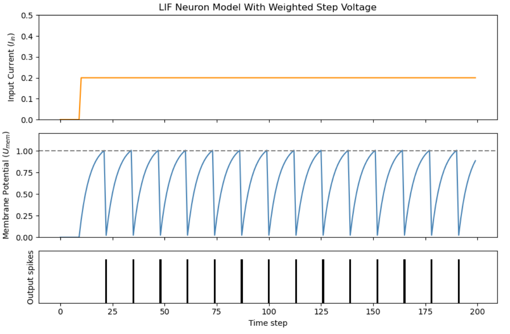
使用snntorch，上述代码可被改写为:
1 2 3 4 5 6 7 8 9 10 11 12 13 14 15 16 17 18 19 20 21 22 lif1 = snn.Leaky(beta=0.8 )0.21 10 ), torch.ones(190 )*w), 0 ) 1 )1 )for step in range (num_steps):1 , ylim_max1=0.5 ,"snn.Leaky Neuron Model" )
所有这些输入输出都必须是 torch.Tensor 类型。cur_in 已经经过权重 W 的加权，因此传入 snn.Leaky 的是已经乘好的结果 ，这在构建网络级别的模型时会更合理。此外，公式 (10) 中的时间步也被向前平移了一步，但不会影响模型的通用性。
构建一个前馈SNN
到目前为止，我们还只考虑了单个神经元的活动，现在我们尝试构建一个3层的全连接SNN，神经元个数分别为[784,1000,10]。在这样一个网络中，每个神经元都会接收到大量脉冲输入。
我们用pytorch构建神经元之间的连接，用snntorch创建神经元。
1 2 3 4 5 6 7 8 9 10 11 12 13 14 15 16 17 18 19 20 784 1000 10 0.99
1 2 spk_in = spikegen.rate_conv(torch.rand((200 , 784 ))).unsqueeze(1 )print (f"Dimensions of spk_in: {spk_in.size()} " )
snntorch.spikegen是 snntorch.spikegen 模块中的函数，用于将发放概率转化为真实的 随机脉冲（spikes） ；他将对每个元素 p ∈ [ 0 , 1 ) p \in [0, 1) p ∈ [ 0 , 1 ) r ∈ [ 0 , 1 ) r \in [0, 1) r ∈ [ 0 , 1 ) r < p r < p r < p torch.rand((200, 784)生成了一个形状为200* 784的张量，200代表200个时间步，784则是输入层神经元个数。.unsqueeze(1)在维度 1 插入一个新的维度，将形状变为(200, 1, 784)；添加的是 batch 维度 （即 batch size = 1），SNN 网络中的模型通常要求输入为 3D 张量 [T, B, N]
信息在网络中的传递过程：
输入加权：i i i spk_in）会通过权重 W i j W_{ij} W ij j j j nn.Linear 层初始化并参与训练的；X i X_i X i W i j W_{ij} W ij X i × W i j X_i \times W_{ij} X i × W ij
输入电流生成：t + 1 t+1 t + 1 U [ t + 1 ] U[t+1] U [ t + 1 ]
判断是否触发脉冲：t + 1 t+1 t + 1 U [ t + 1 ] U[t+1] U [ t + 1 ] U thr U_{\text{thr}} U thr S [ t ] = 1 S[t] = 1 S [ t ] = 1
输出脉冲继续传播：nn.Linear 自动初始化）；
无脉冲不传递：S [ t ] = 0 S[t] = 0 S [ t ] = 0 W W W
1 2 3 4 5 6 7 8 9 10 11 12 13 14 15 16 17 18 for step in range (num_steps):"Fully Connected Spiking Neural Network" )
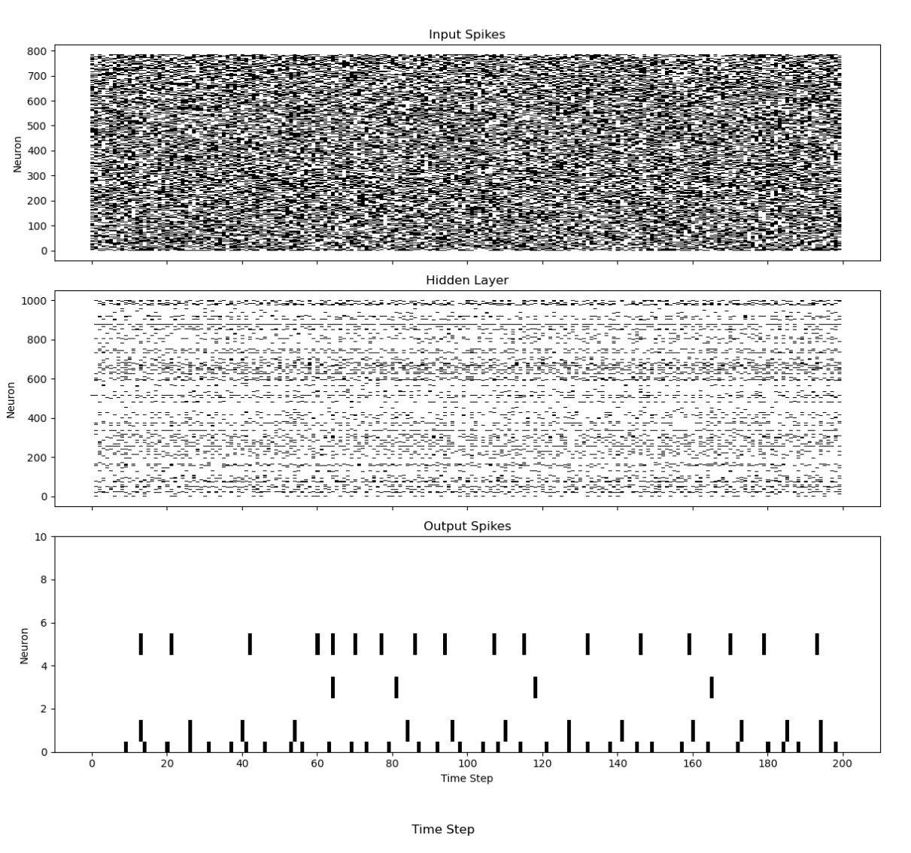在这个阶段，脉冲（spikes）本身没有实际意义。 输入和权重都是随机初始化 的，并没有进行任何训练 。 但我们组织了一个SNN，并看到了脉冲传递的过程，在下一个模块，我们将尝试训练一个SNN。
4. 训练SNN
SNN的循环表示
在前面的部分，我们推导了一个LIF神经元 的递归表达式：
U [ t + 1 ] = β U [ t ] ⏟ decay + W X [ t + 1 ] ⏟ input − R [ t ] ⏟ reset (1) U[t + 1] = \underbrace{\beta U[t]}_{\text{decay}} + \underbrace{WX[t+1]}_{\text{input}} - \underbrace{R[t]}_{\text{reset}} \tag 1
U [ t + 1 ] = decay β U [ t ] + input W X [ t + 1 ] − reset R [ t ] ( 1 )
其中，输入突触电流被解释为 I in [ t ] = W X [ t ] I_{\text{in}}[t] = WX[t] I in [ t ] = W X [ t ] X [ t ] X[t] X [ t ] R [ t ] ⏟ reset \underbrace{R[t]}_{\text{reset}} reset R [ t ] S [ t ] S[t] S [ t ]
脉冲发出过程用如下公式表示：如果膜电位超过阈值，则会发放一个脉冲：
S [ t ] = { 1 , 如果 U [ t ] > U thr 0 , 否则 (2) S[t] = \begin{cases}
1, & \text{如果 } U[t] > U_{\text{thr}} \\
0, & \text{否则}
\end{cases} \tag{2}
S [ t ] = { 1 , 0 , 如果 U [ t ] > U thr 否则 ( 2 )
这种在离散、递归形式下对发放神经元的建模，几乎完美契合了循环神经网络（RNN）和 序列建模的发展趋势。隐式递归连接 来表示膜电位的衰减，这与显式递归连接 不同，后者是将输出脉冲 S out S_{\text{out}} S out − U thr -U_{\text{thr}} − U thr R [ t ] R[t] R [ t ] 展开计算图（unrolled computation graph） 的优势在于，它能够清晰地揭示整个时序计算的执行过程。在展开图中，信息在时间维度上进行前向传播（即从左至右）以完成输出和损失的计算，同时也可以通过时间反向传播算法 (Backpropagation Through Time）来计算梯度。因此，模拟的时间步数越多 ，计算图在时间维度上就越深，相应地网络的时序建模能力也增强。
在传统的循环神经网络（RNN）中，时间衰减因子 β \beta β β \beta β 将 β \beta β ，从而提升网络在复杂时序任务中的表现。接下来的教程将进一步讲解如何使 β \beta β
脉冲的不可微性
反向传播的困境
我们可以将本节中的（2）表达为：$$Θ ( ⋅ ) \Theta(\cdot) Θ ( ⋅ ) Heaviside 阶跃函数（Heaviside step function） ，定义如下：
Θ ( x ) = { 0 , 如果 x < 0 1 , 如果 x ≥ 0 \Theta(x) =
\begin{cases}
0, & \text{如果 } x < 0 \\
1, & \text{如果 } x \geq 0
\end{cases}
Θ ( x ) = { 0 , 1 , 如果 x < 0 如果 x ≥ 0
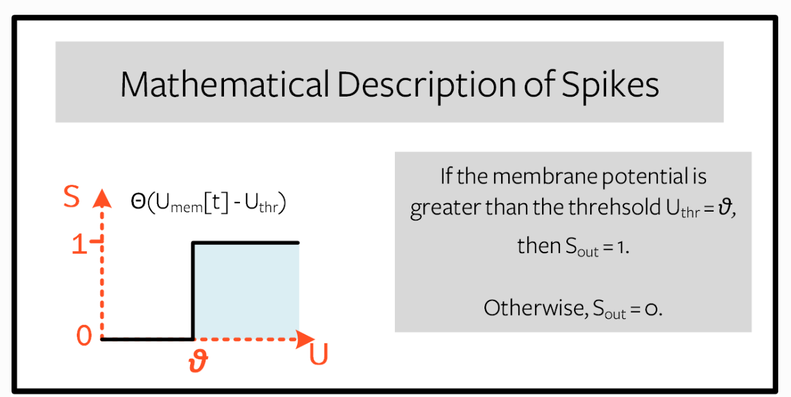
阶跃函数的性质会给神经网络的训练带来巨大的挑战。前向传播（forward pass） ，其反向传播更新权重的过程如图中红色部分显示：
∂ L ∂ W = ∂ L ∂ S ⋅ ∂ S ∂ U ⋅ ∂ U ∂ I ⋅ ∂ I ∂ W (4) \frac{\partial \mathcal{L}}{\partial W} = \frac{\partial \mathcal{L}}{\partial S} \cdot \frac{\partial S}{\partial U} \cdot \frac{\partial U}{\partial I} \cdot \frac{\partial I}{\partial W} \tag 4
∂ W ∂ L = ∂ S ∂ L ⋅ ∂ U ∂ S ⋅ ∂ I ∂ U ⋅ ∂ W ∂ I ( 4 )
根据本节公式（1），∂ I ∂ W = X \frac{\partial I}{\partial W} = X ∂ W ∂ I = X ∂ U ∂ I = 1 \frac{\partial U}{\partial I} = 1 ∂ I ∂ U = 1 ∂ L ∂ S \frac{\partial \mathcal{L}}{\partial S} ∂ S ∂ L
但我们真正需要处理的项是 ∂ S ∂ U \frac{\partial S}{\partial U} ∂ U ∂ S U thr = ϑ U_{\text{thr}} = \vartheta U thr = ϑ U U U 从而无法进行任何学习 ；这就是所谓的死神经元问题 （dead neuron problem）。
克服死神经元问题
应对死神经元问题最常见的方法是：在前向传播过程中仍使用 Heaviside 阶跃函数，但在反向传播时，用一个不会破坏学习过程的导数项来替代 ∂ S ∂ U \frac{\partial S}{\partial U} ∂ U ∂ S ∂ S ~ ∂ U \frac{\partial \tilde{S}}{\partial U} ∂ U ∂ S ~ 次梯度（surrogate gradient）方法 。
有多种代理梯度方法可以选择，我们将在下一部分详细介绍这些技术。在 snnTorch 中（截至 v0.6.0 版本），默认方法是使用反正切函数 （arctan）对 Heaviside 函数进行平滑处理。
∂ S ~ ∂ U ← 1 π ( 1 + [ U π ] 2 ) \frac{\partial \tilde{S}}{\partial U} \leftarrow \frac{1}{\pi \left(1 + [U\pi]^2\right)}
∂ U ∂ S ~ ← π ( 1 + [ U π ] 2 ) 1
其中左箭头表示“替代”。与公式（1）–（2）描述的神经元模型相同，可以在 PyTorch 中实现。
1 2 3 4 5 6 7 8 9 10 11 12 13 14 15 16 17 18 19 20 21 22 23 24 25 26 27 28 29 30 31 32 class LeakySurrogate (nn.Module):def __init__ (self, beta, threshold=1.0 ):super (LeakySurrogate, self ).__init__()self .beta = betaself .threshold = thresholdself .spike_gradient = self .ATan.applydef forward (self, input_, mem ):self .spike_gradient((mem-self .threshold)) self .beta * spk * self .threshold).detach() self .beta * mem + input_ - reset return spk, mem @staticmethod class ATan (torch.autograd.Function): @staticmethod def forward (ctx, mem ):0 ).float () return spk @staticmethod def backward (ctx, grad_output ):1 / (1 + (np.pi * mem).pow_(2 )) * grad_output return grad
在初始化中，定义self.spike_gradient = self.ATan.apply，继承自torch.autograd.Function，能让我们自定义张量的前向传播与其对应的反向传播（梯度计算）逻辑。.apply是 Function 中用于注册并执行计算图的静态方法，它会在前向传播时执行ATan.forward() ，在反向传播时执行 ATan.backward() 。
前向传播过程 ：若我们执行
1 2 lif = LeakySurrogate(beta=0.9 )
则代码首先调用forward方法，执行到spk = self.spike_gradient((mem-self.threshold))时，调用ATan类中的forward(ctx,mem-self.threshold)来输出脉冲，其中ctx为上下文对象，由pytorch自动创建并管理，用来储存mem供backward时使用。
上面的过程也可以通过lif1 = snn.Leaky(beta=0.9)自动调用，snn.Leaky默认的次梯度机制是ATan。
时间反向传播算法
在公式（4）中，我们仅计算了单个时间步 的梯度，这被称为即时影响（immediate influence） 。但在循环神经网络（RNN）或脉冲神经网络（SNN）中，时间反向传播 （BPTT）算法会将梯度从损失项反向传播到所有时间步的祖先，并将其进行累加。
在这个背景下，参数权重 W W W L [ t ] \mathcal{L}[t] L [ t ] L \mathcal{L} L W W W W W W
∂ L ∂ W = ∑ t ∂ L [ t ] ∂ W = ∑ t ∑ s ≤ t ∂ L [ t ] ∂ W [ s ] ⋅ ∂ W [ s ] ∂ W (5) \frac{\partial \mathcal{L}}{\partial W} = \sum_t \frac{\partial \mathcal{L}[t]}{\partial W} = \sum_t \sum_{s \leq t} \frac{\partial \mathcal{L}[t]}{\partial W[s]} \cdot \frac{\partial W[s]}{\partial W} \tag 5
∂ W ∂ L = t ∑ ∂ W ∂ L [ t ] = t ∑ s ≤ t ∑ ∂ W [ s ] ∂ L [ t ] ⋅ ∂ W ∂ W [ s ] ( 5 )
公式(5)通过内层求和 ∑ s ≤ t \sum_{s \leq t} ∑ s ≤ t 因果性（causality）约束 ：也就是说，当前时刻 t t t 之前时间步及当前步 的权重影响，我们不会考虑未来时刻对当前时刻的影响。循环网络或 SNN 中 ，所有时间步共用同一组权重，即 W [ 0 ] = W [ 1 ] = ⋯ = W W[0] = W[1] = \cdots = W W [ 0 ] = W [ 1 ] = ⋯ = W 参数共享 （parameter sharing）机制。由于这个权重是共享的，意味着改变任何 W [ s ] W[s] W [ s ] W W W
∂ W [ s ] ∂ W = 1 \frac{\partial W[s]}{\partial W} = 1
∂ W ∂ W [ s ] = 1
于是公式（5）进一步简化为公式（6）：
∂ L ∂ W = ∑ t ∑ s ≤ t ∂ L [ t ] ∂ W [ s ] (6) \frac{\partial \mathcal{L}}{\partial W} = \sum_t \sum_{s \leq t} \frac{\partial \mathcal{L}[t]}{\partial W[s]} \tag 6
∂ W ∂ L = t ∑ s ≤ t ∑ ∂ W [ s ] ∂ L [ t ] ( 6 )
举例来说：如果我们只考虑前一时刻 s = t − 1 s = t-1 s = t − 1 W [ t − 1 ] W[t-1] W [ t − 1 ]
∂ L [ t ] ∂ W [ t − 1 ] = ∂ L [ t ] ∂ S [ t ] ⋅ ∂ S ~ [ t ] ∂ U [ t ] ⋅ ∂ U [ t ] ∂ U [ t − 1 ] ⋅ ∂ U [ t − 1 ] ∂ I [ t − 1 ] ⋅ ∂ I [ t − 1 ] ∂ W [ t − 1 ] (7) \frac{\partial \mathcal{L}[t]}{\partial W[t-1]} = \frac{\partial \mathcal{L}[t]}{\partial S[t]} \cdot \frac{\partial \tilde{S}[t]}{\partial U[t]} \cdot \frac{\partial U[t]}{\partial U[t-1]} \cdot \frac{\partial U[t-1]}{\partial I[t-1]} \cdot \frac{\partial I[t-1]}{\partial W[t-1]} \tag 7
∂ W [ t − 1 ] ∂ L [ t ] = ∂ S [ t ] ∂ L [ t ] ⋅ ∂ U [ t ] ∂ S ~ [ t ] ⋅ ∂ U [ t − 1 ] ∂ U [ t ] ⋅ ∂ I [ t − 1 ] ∂ U [ t − 1 ] ⋅ ∂ W [ t − 1 ] ∂ I [ t − 1 ] ( 7 )
除了∂ U [ t ] ∂ U [ t − 1 ] \frac{\partial U[t]}{\partial U[t-1]} ∂ U [ t − 1 ] ∂ U [ t ] β \beta β BPTT算法 ：
设置损失函数/输出解码
在传统的非脉冲神经网络中，对于一个监督式的多分类问题，通常是选择激活值最高的神经元作为预测类别。
频率编码（Rate coding） ：选取发放率（或脉冲数量）最高的神经元作为预测类别；时延编码（Latency coding） ：选取最先发放脉冲的神经元作为预测类别。
我们先关注“频率编码 （rate code）”。当输入数据传入网络时，我们希望目标类别对应的神经元在整个过程中发放最多的脉冲，也就是具有最高的平均发放频率 。实现这一目标的一种方法是：使正确类别的膜电位 U U U U t h r U_{thr} U t h r 输出神经元的膜电位做 softmax 计算来实现，其中 C C C
p i [ t ] = e U i [ t ] ∑ i = 0 C e U i [ t ] (8) p_i[t] = \frac{e^{U_i[t]}}{\sum_{i=0}^C e^{U_i[t]}} \tag{8}
p i [ t ] = ∑ i = 0 C e U i [ t ] e U i [ t ] ( 8 )
接下来，可以计算预测概率 p i p_i p i y i ∈ { 0 , 1 } C y_i \in \{0, 1\}^C y i ∈ { 0 , 1 } C
L C E [ t ] = − ∑ i = 0 C y i log ( p i [ t ] ) (9) \mathcal{L}_{CE}[t] = - \sum_{i=0}^C y_i \log(p_i[t]) \tag{9}
L CE [ t ] = − i = 0 ∑ C y i log ( p i [ t ]) ( 9 )
这一损失函数推动网络学习，让正确类别的输出膜电位 U i U_i U i
该目标在模拟的每一个时间步 上都被应用，因此每一步都会生成一个损失值。这些损失值会在模拟结束时被汇总求和：
L C E = ∑ t L C E [ t ] 0 (1) \mathcal{L}_{CE} = \sum_t \mathcal{L}_{CE}[t]
\tag 10
L CE = t ∑ L CE [ t ] 0 ( 1 )
这只是将损失函数应用于脉冲神经网络的多种方式之一。snnTorch 提供了多种方法（可在 snn.functional 模块中找到）。
训练全连接SNN
下面我们开始正式训练一个全连接SNN
1 2 3 4 5 6 128 '/data/mnist' float "cuda" ) if torch.cuda.is_available() else torch.device("mps" ) if torch.backends.mps.is_available() else torch.device("cpu" )
定义图像预处理流程并下载数据
1 2 3 4 5 6 7 8 9 10 28 , 28 )), 0 ,), (1 ,)) True , download=True , transform=transform)False , download=True , transform=transform)
定义数据加载方式
1 2 3 True , drop_last=True )True , drop_last=True )
定义网络结构和超参数
1 2 3 4 5 6 7 8 28 *28 1000 10 25 0.95
定义神经网络、损失函数和优化器。
1 2 3 4 5 6 7 8 9 10 11 12 13 14 15 16 17 18 19 20 21 22 23 24 25 26 27 28 29 30 31 32 33 34 35 36 class Net (nn.Module):def __init__ (self ):super ().__init__()self .fc1 = nn.Linear(num_inputs, num_hidden)self .lif1 = snn.Leaky(beta=beta) self .fc2 = nn.Linear(num_hidden, num_outputs)self .lif2 = snn.Leaky(beta=beta)def forward (self, x ):self .lif1.init_leaky()self .lif2.init_leaky()for step in range (num_steps):self .fc1(x)self .lif1(cur1, mem1)self .fc2(spk1)self .lif2(cur2, mem2)return torch.stack(spk2_rec, dim=0 ), torch.stack(mem2_rec, dim=0 )5e-4 , betas=(0.9 , 0.999 ))
打印训练过程：
1 2 3 4 5 6 7 8 9 10 11 12 13 14 15 16 17 18 def print_batch_accuracy (data, targets, train=False ):1 ))sum (dim=0 ).max (1 ) if train:print (f"Train set accuracy for a single minibatch: {acc*100 :.2 f} %" )else :print (f"Test set accuracy for a single minibatch: {acc*100 :.2 f} %" )def train_printer ():print (f"Epoch {epoch} , Iteration {iter_counter} " )print (f"Train Set Loss: {loss_hist[counter]:.2 f} " )print (f"Test Set Loss: {test_loss_hist[counter]:.2 f} " )True )False )print ("\n" )
下面我们将数据输入到网络，查看预测情况：
1 2 3 4 5 6 data, targets = next (iter (train_loader))1 ))print (mem_rec.size())
输出结果为torch.Size([25, 128, 10])，25代表时间步，128是batchsize，10是预测类别数。
1 2 3 4 5 6 7 8 1 ), dtype=dtype, device=device)for step in range (num_steps):print (f"Training loss: {loss_val.item():.3 f} " )
>>> Training loss: 58.603
1 print_batch_accuracy(data, targets, train=True )
>>>Train set accuracy for a single minibatch: 11.72%
forward的过程结束，下面开始反向传播：
1 2 3 4 5 6 7 8 9 10 11 12 13 14 15 16 17 1 ))1 ), dtype=dtype, device=device)for step in range (num_steps):print (f"Training loss: {loss_val.item():.3 f} " )True )
>>>Training loss: 49.966 Train set accuracy for a single minibatch: 53.12%
1 2 3 4 5 6 7 8 9 10 11 12 13 14 15 16 17 18 19 20 21 22 23 24 25 26 27 28 29 30 31 32 33 34 35 36 37 38 39 40 41 42 43 44 45 46 47 48 49 50 51 52 53 num_epochs = 2 0 for epoch in range (num_epochs):0 iter (train_loader)for data, targets in train_batch:1 ))1 ), dtype=dtype, device=device)for step in range (num_steps):with torch.no_grad():eval ()next (iter (test_loader))1 ))1 ), dtype=dtype, device=device)for step in range (num_steps):if counter % 50 == 0 :1 1
打印损失：
1 2 3 4 5 6 7 8 9 10 11 12 13 14 15 16 17 18 19 Epoch 0, Iteration 0Test Set Loss: 48.86Test set accuracy for a single minibatch: 46.09%Test Set Loss: 6.93Test set accuracy for a single minibatch: 94.53%Test Set Loss: 3.98Test set accuracy for a single minibatch: 97.66%
查看损失下降过程：
1 2 3 4 5 6 7 8 9 "w" , figsize=(10 , 5 ))"Loss Curves" )"Train Loss" , "Test Loss" ])"Iteration" )"Loss" )
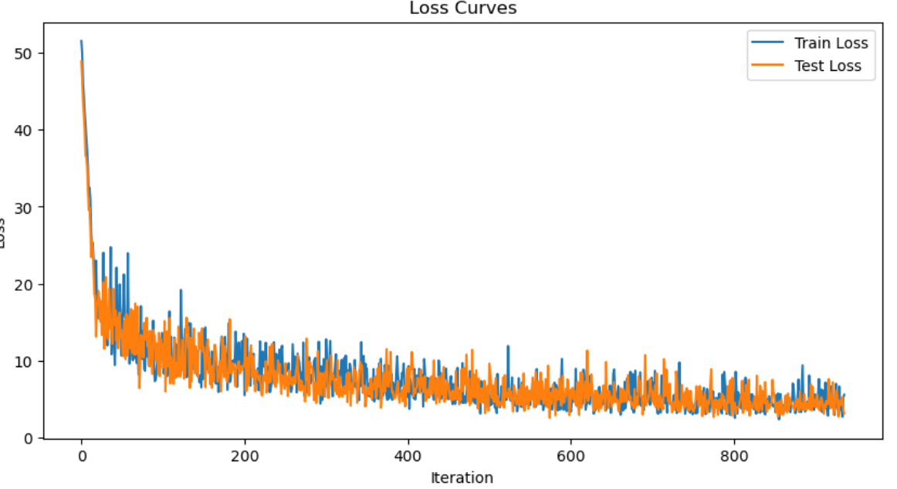
绘图函数
1 2 3 4 5 6 7 8 9 10 def plot_mem (utrace,title="Leaky Neuron Model" ):10 , 5 ))range (len (utrace)), utrace, label='Membrane Potential (V)' )'Time (s)' )'Membrane Potential (V)' )True )
1 2 3 4 5 6 7 8 9 10 11 12 13 14 15 16 17 18 19 20 21 22 23 24 25 26 27 28 29 30 31 def plot_current_pulse_response (input_series, output_series, vline1=None , vline2=None , title="Lapicque's Neuron Model" ):len (input_series))2 , 1 , figsize=(8 , 5 ), sharex=True )'orange' )if vline1 is not None :'gray' , linestyle='--' )if vline2 is not None :'gray' , linestyle='--' )"Input Current ($I_{in}$)" )0 , input_series.max () * 1.2 ])'steelblue' )if vline1 is not None :'gray' , linestyle='--' )if vline2 is not None :'gray' , linestyle='--' )"Membrane Potential ($U_{mem}$)" )"Time step" )
plot_cur_mem_spk
1 2 3 4 5 6 7 8 9 10 11 12 13 14 15 16 17 18 19 20 21 22 23 24 25 26 27 28 29 30 31 32 33 34 35 36 37 38 39 40 41 42 43 44 45 46 47 48 def plot_cur_mem_spk (cur_in, mem_rec, spk_rec, thr_line=1.0 , vline=None , ylim_max1=None , ylim_max2=None , title="LIF Neuron Simulation" ):len (cur_in))3 , 1 , 9 , 6 ),sharex=True ,'height_ratios' : [1 , 1 , 0.5 ]})'darkorange' )if vline is not None :'--' , color='gray' )"Input Current ($I_{in}$)" )if ylim_max1 is not None :0 , ylim_max1])else :0 , cur_in.max () * 1.2 ])'steelblue' )'--' , color='gray' ) if vline is not None :'--' , color='gray' )"Membrane Potential ($U_{mem}$)" )if ylim_max2 is not None :0 , ylim_max2])else :0 , mem_rec.max () * 1.2 ])0.9 , color='black' )if vline is not None :'--' , color='gray' )"Output spikes" )"Time step" )0 , 1.2 ])
1 2 3 4 5 6 7 8 9 10 11 12 13 14 15 16 17 18 19 20 21 22 23 24 25 26 27 28 29 30 def plot_spk_mem_spk (spk_in, mem_rec, spk_rec, title="Neuron Model with Spikes" ):len (spk_in)3 , 1 , figsize=(10 , 6 ), sharex=True , 'height_ratios' : [1 , 3 , 1 ]})0 ].eventplot(torch.where(spk_in.view(-1 ) > 0 )[0 ].tolist(), 0 , colors='black' , linelengths=0.8 )0 ].set_yticks([])0 ].set_title(title, fontsize=12 )0 ].set_ylabel("Input Spikes" )1 ].plot(mem_rec, color="royalblue" , linewidth=1 )1 ].axhline(0.5 , ls='--' , color='gray' , lw=1 )1 ].set_ylabel(r"Membrane Potential ($U_{mem}$)" )1 ].set_ylim(0 , 1 )2 ].eventplot(torch.where(spk_rec.view(-1 ) > 0 )[0 ].tolist(), 0 , colors='black' , linelengths=0.8 )2 ].set_yticks([])2 ].set_ylabel("Output spikes" )2 ].set_xlabel("Time step" )
1 2 3 4 5 6 7 8 9 10 11 12 13 14 15 16 17 18 19 20 21 22 23 24 25 26 27 28 29 30 31 32 33 34 35 36 def plot_snn_spikes (spk_in, spk1_rec, spk2_rec, title="Spiking Neural Network" ):1 ).T.detach().cpu().numpy()1 ).T.detach().cpu().numpy()1 ).T.detach().cpu().numpy()3 , 1 , figsize=(12 , 9 ), sharex=True )14 )1 ] 0 ].imshow(spk_in, aspect='auto' , cmap='Greys' , interpolation='nearest' ,'lower' )0 ].set_title("Input Spikes" )0 ].set_ylabel("Neuron" )0 ].set_xticks([])1 ].imshow(spk1_rec, aspect='auto' , cmap='Greys' , interpolation='nearest' ,'lower' )1 ].set_title("Hidden Layer" )1 ].set_ylabel("Neuron" )1 ].set_xticks([])2 ].imshow(spk2_rec, aspect='auto' , cmap='Greys' , interpolation='nearest' ,'lower' )2 ].set_title("Output Spikes" )2 ].set_ylabel("Neuron" )2 ].set_xlabel("Time step" )2 ].set_xticks([i for i in range (0 , T, max (1 , T // 10 ))])2 ].set_xticklabels([str (i) for i in range (0 , T, max (1 , T // 10 ))])"Time Step" , fontsize=12 )0 , 0.03 , 1 , 0.95 ])
1 2 3 4 5 6 7 8 9 10 11 12 13 14 15 16 17 18 19 20 21 22 23 24 25 26 27 28 29 30 31 32 33 34 35 36 37 38 39 40 import matplotlib.pyplot as pltdef plot_snn_spikes (spk_in, spk1_rec, spk2_rec, title="Spiking Neural Network" ):1 ).T.detach().cpu().numpy()1 ).T.detach().cpu().numpy()1 ).T.detach().cpu().numpy()1 ]3 , 1 , figsize=(12 , 9 ), sharex=True )14 )def plot_with_padding (ax, data, title ):int (n_neurons * 0.1 )int (n_steps * 0.1 )'auto' , cmap='Greys' , interpolation='nearest' , origin='lower' )"Neuron" )0 ], spk_in, "Input Spikes" )0 ].set_xticks([])1 ], spk1_rec, "Hidden Layer" )1 ].set_xticks([])2 ], spk2_rec, "Output Spikes" )2 ].set_xlabel("Time Step" )2 ].set_xticks([i for i in range (0 , T + 1 , max (1 , T // 10 ))])2 ].set_xticklabels([str (i) for i in range (0 , T + 1 , max (1 , T // 10 ))])"Time Step" , fontsize=12 )0 , 0.03 , 1 , 0.95 ])
参考资料
Yamazaki K, Vo-Ho V K, Bulsara D, et al. Spiking neural networks and their applications: A review[J]. Brain sciences, 2022, 12(7): 863. link : Spiking Neural Networks and Their Applications: A Review
https://snntorch.readthedocs.io/en/latest/tutorials/（本笔记大部分内容翻译自该tutorial )